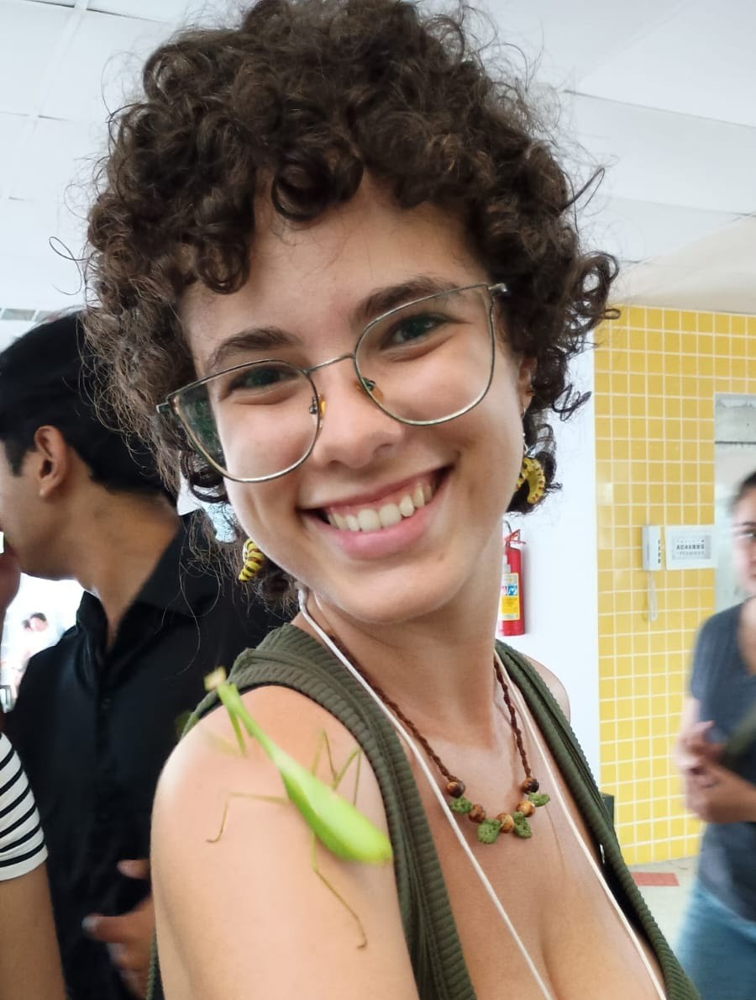

Meet the people who
brought Drosie to life.
Drosie's World brings together creativity, scientific expertise, educational guidance, and community collaboration. Meet the people and organizations whose contributions helped transform a science outreach idea into a children's book and learning experience.
✍️ The Author & Creator
🎨 The Illustrator

Letícia Cavalcanti
Letícia Cavalcanti illustrated Drosie, the Fruit Fly, creating the colorful artwork that gives Drosie and her surroundings their visual identity.
Her illustrations transform scientific concepts and storytelling into expressive, child-friendly visuals that help young readers connect with the characters and the biological world they explore.
💚 Project Mentorship & Development
Supporting Drosie's World from its earliest concept through the completion of the book.
Dr. Jennifer Girón
Dr. Jennifer Girón played a central role in the development of Drosie, the Fruit Fly, supporting the project from its initial concept through completion.
Her contributions included developing ideas, helping secure funding, providing guidance on project direction, reviewing materials, and supporting the coordination and execution of the book and related outreach work.
Her sustained mentorship and thoughtful feedback helped shape the project into an engaging science communication resource for children and educators.
🔬 Scientific & Educational Review
These contributors helped strengthen the scientific accuracy, educational quality, and age-appropriate presentation of Drosie's content.
Dr. James Carr
Reviewed the book's scientific content and assisted with editing the text to improve accuracy, clarity, and readability.
Dr. Rebecca Hite
Provided educational guidance and feedback that informed the development and presentation of the book's learning content.
Alexandra Graham
Contributed expertise in early childhood education and helped align the book's educational content with the Texas Essential Knowledge and Skills (TEKS) and Next Generation Science Standards (NGSS).
🌼 Project Connections & Support
Nicholas DeLay
Helped launch the project and establish connections with a supportive network of individuals who contributed guidance during its development.
🏛️ Museum & Community Outreach
Community learning spaces provided opportunities to develop Drosie's World and introduce science to young learners.
Museum at Texas Tech University
The Museum at Texas Tech University provided a platform and opportunities for developing Drosie's World, supporting its growth from an initial science outreach idea into an educational resource for young learners.
Through its commitment to public education and community engagement, the Museum helped create opportunities to share science with children and develop the project through meaningful outreach experiences.
Lubbock Lake Landmark
Provided an opportunity to introduce Drosie to young learners through an educational outreach activity, allowing children to explore scientific concepts through interactive learning experiences.
🌱 Funding & Outreach Support
Grant support has helped advance the development and reach of this science outreach project.
Society for the Study of Evolution
Provided grant support for the science outreach project and its educational activities.
Entomological Society of America
Awarded support for the science outreach initiative through the Chrysalis Fund.
Science grows when we share it.
Drosie's World brings together scientific research, illustration, education, and community collaboration to make biology approachable for curious young minds.
← Explore Drosie's World